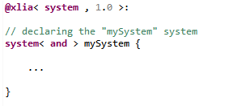

In a XLIA file, the main "machine" is called "system".
When it is a composite machine, it is still possible to specify the nature of concurrency between its components as a machine. By default, when no precisions are given, a composite "system" will be considered as being of type "or" (see moc).
To declare a "system", we use the keyword "system" :
Systems and what they do is mainly defined by their sub-components. As for all machines, we list system sub-components in sections introduced by a "@XXX:" keyword. Those sections gather the declarations of all sub-components of a given type.
For the "system" type of machine, the most important sections to know about are :